Change slides with the ◀ ▶ buttons, the arrow keys, Space or your presentation clicker. You can record up to 2 hours.
The file is named after you, as the Speaker Workspace needs it.
Export your deck to PDF (PowerPoint, Keynote, Google Slides: File → Download / Export → PDF). Live demo? Pick "Share screen" - you can switch between slides and screen while recording.
When you press Start recording, choose where to save the video (your Desktop is best). It's written there as you record. Press Stop when you're done, then upload the file and your PDF to the Speaker Workspace.
The recorder needs Chrome or Edge on a laptop or desktop computer (Windows, Mac or Linux).